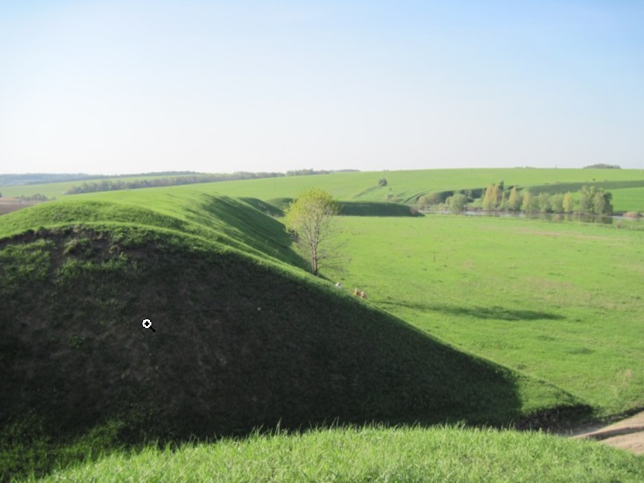
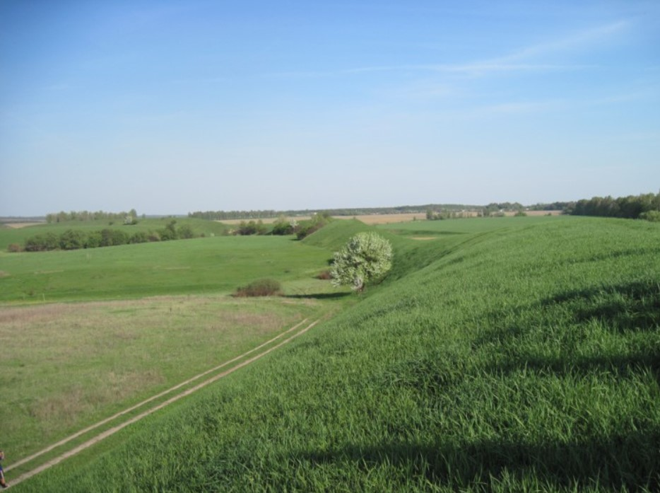
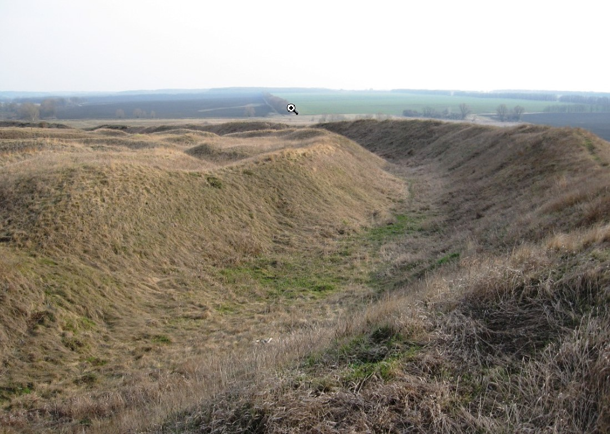

Унікальною історичною пам'яткою нашого краю є Немирівське городище, або так звані Великі, або Скіфські вали, розташовані на лівому березі Південного Бугу, біля села Сажки, за 2 кілометри від Немирова на схилі плато. Воно є одним з найбільших городищ на території Європи. Від них йде потужна енергетика. Стоячи на вершині такого віковічного насипу думаєш лише про одне. Щоб бодай на годину потрапити у ті прадавні часи та хоч одним оком побачити існування тієї давності.

Вже більше чотирьох тисячоліть вали розкинулись по периметру на 5 кілометрів. Їх ширина в основі складає 32 метри; висота ще й досі становить близько 9 метрів. І можна лише собі уявити, скільки тієї висоти пішло в землю, осіло під невблаганним плином часу. Адже, за деякими даними, первинна висота валів складала майже 30 метрів.

Опис городища
Ця потужна замкнена огорожа розташована на обох берегах річки Мирки, яка ділить її на дві нерівних частини: більшу північну, висотну, яка займає 2/3 площі городища і меншу південну, пологу і болотисту. Ширина розривів валів становить від 10 до 60 метрів.На найвищому місці поміж валами розташувалось поселення-городище, так зване "замчисько".
В 1862 році землі, на яких розкинулось городище, перейшли у спадок до графа Григорія Строганова. Земля тільки частково була його власністю, багато наділів належало місцевим селянам. Розуміючи, що городище – це не лише віковічна пам'ятка історії, а й джерело збагачення, Строганов відселив місцевих жителів до сіл Сажки та Озеро, де для кожного будував садибу і, забираючи 300 сажнів землі, наділяв в межах 800. Таким чином Строганов залишився єдиним господарем городища.

Архіологічні дослідження
Тоді ходила легенда, серед мешканців Немирова та навколишніх сіл, що на городищі схована велетенська скриня із золотом. Ось саме ця чутка і заставила жадібного до багатства графа привласнити городище. Ця чутка покликала на городище й тисячі інших шукачів скарбів, які почали проводити варварські розкопки у пошуках скарбу. Але золота так ніхто і не знайшов, знаходились інші речі, які не цікавили горе-археологів. Ці речі просто варварськи знищувались.
Ці розкопки тривали аж до 1908 року, поки їх не відвідала донька Григорія Строганова Марія Григорівна Щербатова, яку вразили розміри викопних кісток. Розуміючи історичну цінність старого поселення у Валах та викопних знахідок, княгиня заборонила усі подальші розкопки і наказала усі викопні скарби перенести до своєї садиби. А щоб не руйнувалась ця археологічна пам'ятка, і щоб повністю позбутися від посягань мародерів, вона повністю викупила усі наділи селян в районі Валів та надала їм орні землі біля села Озеро.
У вчених є багато думок щодо походження пам'ятки, проте переважно сходяться до того, що вік Немирівського городища становить понад 4 тисячі років. А тому твердження відносно спорудження Валів в часи скіфів, і тим більш ще й ними самими, відпадає само собою.Проте, Немирівське городище, або так звані Великі Вали, ще ждуть своїх справжніх дослідників, щоб розкрити їм усі свої таємниці, істинність та правдивість.